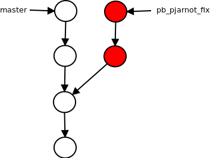

GIT
rozproszony system kontroli wersji
Patryk Jarnot
Plan prezentacji
- Wprowadzenie
- Podstawy
- Branch
- Historia repozytorium
- GIT Internals
- Podsumowanie
Wprowadzenie


init
Tworzymy repozytorium
stage
Modelujemy zmiany
commit
Wrzucamy zmiany do repozytorium

Branch
Praca nad wieloma zadaniami

merge
Łączymy zmiany
log
Przeglądamy historie


diff
Porównujemy pliki
checkout
Skaczemy po historii
reset
Cofamy zmiany
revert
Cofamy zmiany cd.
git internals
Podsumowanie
- Wprowadzenie
- Podstawy
- Branch
- Historia repozytorium
- GIT Internals
- Podsumowanie